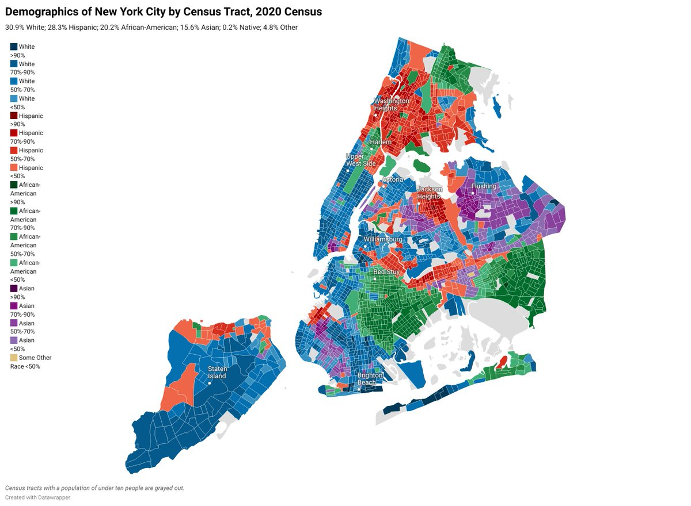
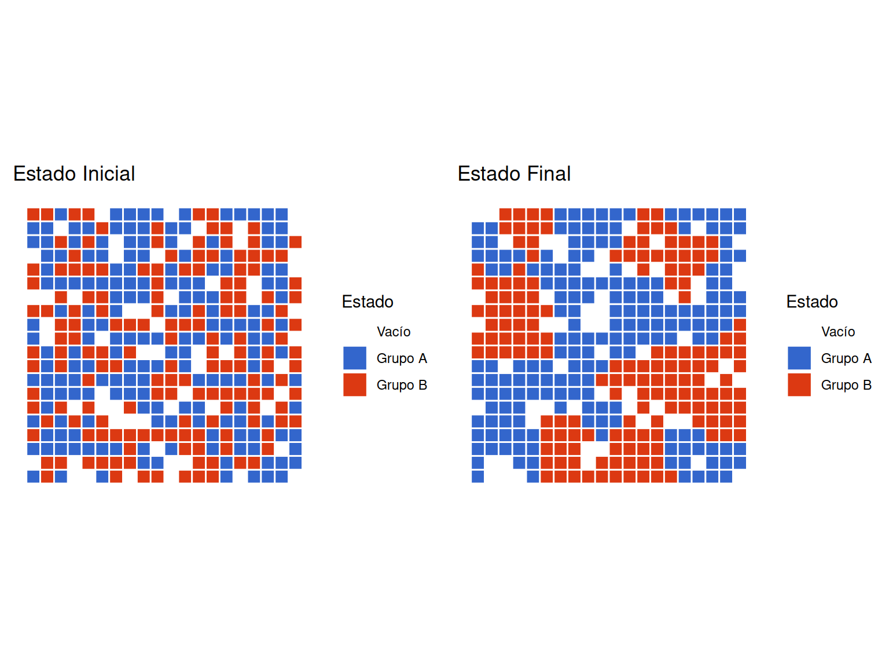
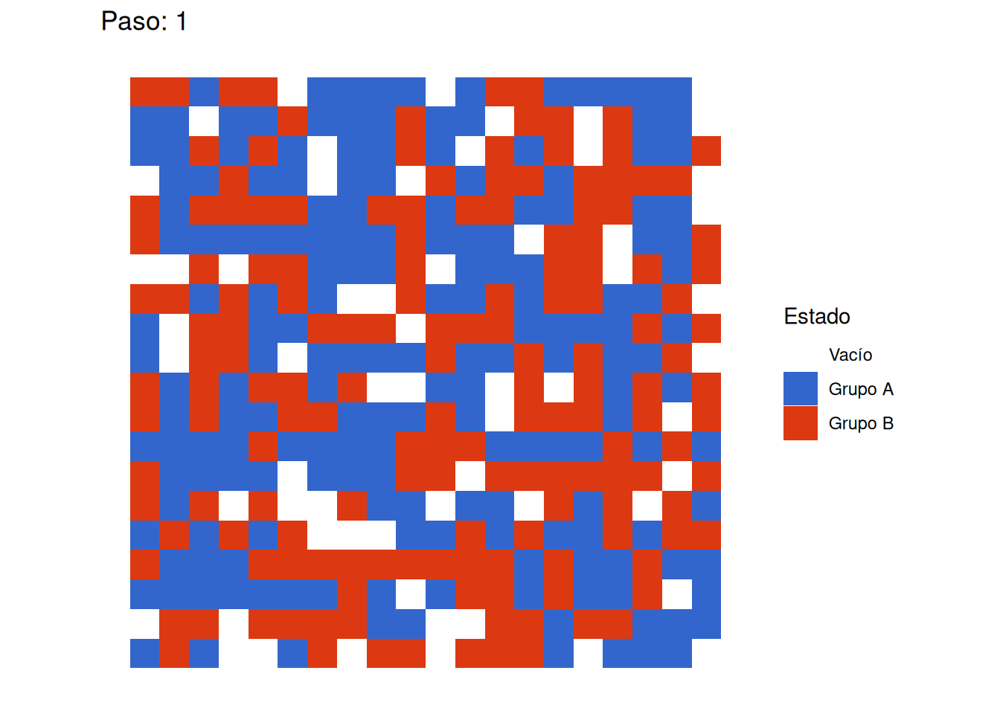
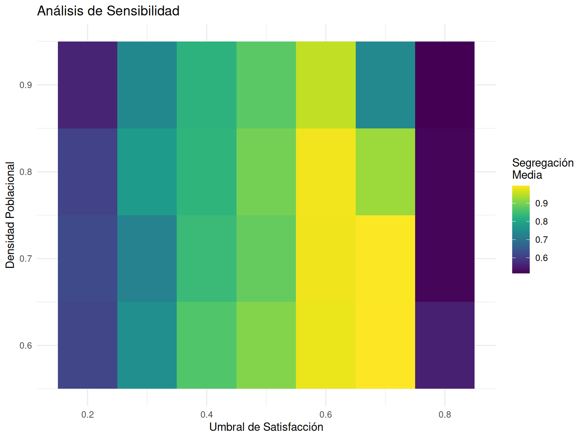

# Manipulación de datos y visualización
library(tidyverse) # Para manejo de datos y gráficos base
library(gganimate) # Para animaciones
library(gifski) # Para generar GIFs
library(ragg) # Para mejor renderizado
library(gridExtra) # Para combinar gráficos
library(viridis) # Para paletas de colores
# Configuración global de gráficos
theme_set(theme_minimal())Las ciudades, los barrios y los países suelen estar segregados. Esto significa que las personas de diferentes razas o etnias tienden a estar agrupadas geoespacialmente. Por ejemplo, el siguiente mapa muestra los patrones de segregación para la ciudad de NY en el año 2020.

1 Configuración Inicial
1.1 Carga de Librerías
Primero cargamos todas las librerías necesarias para nuestro análisis:
2 Marco Teórico
2.1 El Modelo de Schelling
El modelo de segregación de Schelling (1971) demuestra cómo las preferencias individuales moderadas pueden llevar a patrones significativos de segregación a nivel macro. Los tres mecanismos fundamentales que Schelling identificó son:
- Acción Organizada: Prácticas institucionales discriminatorias
- Filtros Socioeconómicos: Correlaciones entre etnia y recursos
- Preferencias Individuales: Decisiones basadas en composición del vecindario
Note
Nota Conceptual El modelo se enfoca en el tercer mecanismo, pero es importante recordar que en la realidad estos tres mecanismos interactúan de manera compleja.
2.2 Implementación Base
2.2.1 Funciones de Utilidad
Primero creamos funciones auxiliares que usaremos en todo el código:
# Función para verificar si una posición está dentro de la grilla
is_valid_position <- function(row, col, n_rows, n_cols) {
return(row >= 1 && row <= n_rows && col >= 1 && col <= n_cols)
}
# Función para obtener vecinos de una posición
get_neighbors <- function(grid, row, col) {
n_rows <- nrow(grid)
n_cols <- ncol(grid)
# Definir posibles direcciones (Moore neighborhood)
directions <- expand.grid(
row = c(-1, 0, 1),
col = c(-1, 0, 1)
)
directions <- directions[!(directions$row == 0 & directions$col == 0),]
# Obtener posiciones válidas de vecinos
neighbors <- lapply(1:nrow(directions), function(i) {
new_row <- row + directions$row[i]
new_col <- col + directions$col[i]
if(is_valid_position(new_row, new_col, n_rows, n_cols)) {
return(grid[new_row, new_col])
} else {
return(NA)
}
})
return(unlist(neighbors[!is.na(neighbors)]))
}2.4 Funciones Principales del Modelo
2.4.1 Cálculo de Satisfacción Individual
Función de satisfacción individual
calculate_satisfaction <- function(grid, row, col, threshold = 0.375) {
# Si la celda está vacía, se considera 'satisfecha'
if (grid[row, col] == 0) return(TRUE)
# Obtener tipo del agente y vecinos
agent_type <- grid[row, col]
neighbors <- get_neighbors(grid, row, col)
# Contar vecinos totales y similares
total_neighbors <- sum(neighbors != 0)
if(total_neighbors == 0) return(TRUE) # Sin vecinos = satisfecho
same_type_neighbors <- sum(neighbors == agent_type)
# Calcular proporción y comparar con umbral
ratio <- same_type_neighbors / total_neighbors
return(ratio >= threshold)
}
Explicación Sociológica
En el mundo real, la satisfacción con el vecindario depende de múltiples factores. Esta función simplifica esa complejidad a una única dimensión: la proporción de vecinos similares. El parámetro threshold representa la mínima proporción de vecinos similares que un agente requiere para estar satisfecho.
2.4.2 Movimiento de Agentes
Función para paso de simulación
schelling_step <- function(grid, threshold = 0.375) {
# Inicialización
n_rows <- nrow(grid)
n_cols <- ncol(grid)
new_grid <- grid
# Identificar agentes y espacios vacíos
agent_positions <- which(grid != 0, arr.ind = TRUE)
empty_positions <- which(grid == 0, arr.ind = TRUE)
# Si no hay espacios vacíos, no hay movimiento posible
if(nrow(empty_positions) == 0) return(grid)
# Identificar agentes insatisfechos
unsatisfied <- apply(agent_positions, 1, function(pos) {
!calculate_satisfaction(grid, pos[1], pos[2], threshold)
})
unsatisfied_positions <- agent_positions[unsatisfied,, drop=FALSE]
# Si no hay agentes insatisfechos, mantener grid actual
if(nrow(unsatisfied_positions) == 0) return(grid)
# Proceso de reubicación
for(i in 1:nrow(unsatisfied_positions)) {
if(nrow(empty_positions) == 0) break
# Seleccionar nueva ubicación aleatoriamente
empty_idx <- sample(nrow(empty_positions), 1)
agent_pos <- unsatisfied_positions[i,]
empty_pos <- empty_positions[empty_idx,]
# Realizar movimiento
new_grid[empty_pos[1], empty_pos[2]] <- grid[agent_pos[1], agent_pos[2]]
new_grid[agent_pos[1], agent_pos[2]] <- 0
# Actualizar espacios disponibles
empty_positions <- empty_positions[-empty_idx,, drop=FALSE]
}
return(new_grid)
}2.5 Simulación Completa
Función de simulación completa
run_schelling_simulation <- function(n_rows = 20, n_cols = 20,
p_empty = 0.15, p_ratio = 0.5,
threshold = 0.4, max_steps = 50,
record_metrics = TRUE) {
# Inicializar sistema
grid <- create_schelling_grid(n_rows, n_cols, p_empty, p_ratio)
grid_history <- list(grid)
# Almacenar métricas si se solicita
if(record_metrics) {
metrics <- data.frame(
step = 0,
satisfaction_rate = NA,
segregation_index = NA,
moves = 0
)
metrics[1, 2:3] <- calculate_metrics(grid)
}
# Simulación del proceso
for(i in 1:max_steps) {
# Ejecutar un paso de la simulación
new_grid <- schelling_step(grid, threshold)
# Guardar estado
grid_history[[i + 1]] <- new_grid
# Registrar métricas
if(record_metrics) {
current_metrics <- calculate_metrics(new_grid)
moves <- sum(new_grid != grid)
metrics <- rbind(metrics,
data.frame(step = i,
satisfaction_rate = current_metrics$satisfaction_rate,
segregation_index = current_metrics$segregation_index,
moves = moves))
}
# Verificar equilibrio
if(identical(grid, new_grid)) {
cat("Equilibrio alcanzado en paso", i, "\n")
break
}
grid <- new_grid
}
# Retornar resultados
if(record_metrics) {
return(list(
grid_history = grid_history,
metrics = metrics
))
} else {
return(grid_history)
}
}2.6 Funciones de Métricas y Visualización
Funciones de análisis
calculate_metrics <- function(grid) {
n_rows <- nrow(grid)
n_cols <- ncol(grid)
# Calcular tasa de satisfacción
satisfied_count <- 0
total_agents <- 0
for(i in 1:n_rows) {
for(j in 1:n_cols) {
if(grid[i,j] != 0) {
total_agents <- total_agents + 1
if(calculate_satisfaction(grid, i, j)) {
satisfied_count <- satisfied_count + 1
}
}
}
}
satisfaction_rate <- satisfied_count / total_agents
# Calcular índice de segregación
segregation_index <- calculate_segregation_index(grid)
return(list(
satisfaction_rate = satisfaction_rate,
segregation_index = segregation_index
))
}
# Función auxiliar para índice de segregación
calculate_segregation_index <- function(grid) {
n_rows <- nrow(grid)
n_cols <- ncol(grid)
segregation_sum <- 0
total_pairs <- 0
for(i in 1:n_rows) {
for(j in 1:n_cols) {
if(grid[i,j] != 0) {
neighbors <- get_neighbors(grid, i, j)
similar_neighbors <- sum(neighbors == grid[i,j])
total_neighbors <- sum(neighbors != 0)
if(total_neighbors > 0) {
segregation_sum <- segregation_sum + similar_neighbors/total_neighbors
total_pairs <- total_pairs + 1
}
}
}
}
return(segregation_sum / total_pairs)
}3 Visualización y Análisis
3.1 Funciones de Visualización
Funciones para visualización
# Función para visualizar un estado de la grilla
plot_grid_state <- function(grid, title = NULL) {
# Convertir grid a dataframe para ggplot
df <- expand.grid(x = 1:ncol(grid), y = 1:nrow(grid))
df$value <- as.vector(grid)
# Crear gráfico
ggplot(df, aes(x = x, y = y, fill = factor(value))) +
geom_tile(color = "white", size = 0.5) +
scale_fill_manual(
values = c("white", "#3366CC", "#DC3912"),
labels = c("Vacío", "Grupo A", "Grupo B"),
name = "Estado"
) +
coord_equal() +
theme_minimal() +
theme(
axis.text = element_blank(),
axis.title = element_blank(),
panel.grid = element_blank()
) +
ggtitle(title)
}
# Función para crear animación de la simulación
create_simulation_animation <- function(grid_history) {
# Preparar datos
df <- data.frame()
for(i in seq_along(grid_history)) {
temp_df <- expand.grid(
x = 1:ncol(grid_history[[1]]),
y = 1:nrow(grid_history[[1]])
)
temp_df$value <- as.vector(grid_history[[i]])
temp_df$step <- i
df <- rbind(df, temp_df)
}
# Crear animación
p <- ggplot(df, aes(x = x, y = y, fill = factor(value))) +
geom_tile() +
scale_fill_manual(
values = c("white", "#3366CC", "#DC3912"),
labels = c("Vacío", "Grupo A", "Grupo B"),
name = "Estado"
) +
coord_equal() +
theme_minimal() +
theme(
axis.text = element_blank(),
axis.title = element_blank(),
panel.grid = element_blank()
) +
labs(title = 'Paso: {frame_time}') +
transition_time(step)
animate(p, nframes = length(grid_history), fps = 2)
}
# Función para visualizar métricas a lo largo del tiempo
plot_metrics <- function(metrics) {
# Preparar datos en formato largo
metrics_long <- metrics %>%
pivot_longer(
cols = c(satisfaction_rate, segregation_index),
names_to = "metric",
values_to = "value"
)
# Crear gráfico
ggplot(metrics_long, aes(x = step, y = value, color = metric)) +
geom_line(size = 1) +
geom_point(size = 2) +
scale_color_manual(
values = c("#3366CC", "#DC3912"),
labels = c("Tasa de Satisfacción", "Índice de Segregación"),
name = "Métrica"
) +
theme_minimal() +
labs(
title = "Evolución de Métricas",
x = "Paso",
y = "Valor"
)
}3.2 Análisis Completo
Ejecutar y analizar simulación
# Configurar parámetros
params <- list(
n_rows = 20,
n_cols = 20,
p_empty = 0.15,
p_ratio = 0.5,
threshold = 0.4,
max_steps = 50
)
# Ejecutar simulación
set.seed(123) # Para reproducibilidad
results <- run_schelling_simulation(
n_rows = params$n_rows,
n_cols = params$n_cols,
p_empty = params$p_empty,
p_ratio = params$p_ratio,
threshold = params$threshold,
max_steps = params$max_steps,
record_metrics = TRUE
)Equilibrio alcanzado en paso 8 Ejecutar y analizar simulación
# Visualizar estados inicial y final
grid_plots <- gridExtra::grid.arrange(
plot_grid_state(results$grid_history[[1]], "Estado Inicial"),
plot_grid_state(results$grid_history[[length(results$grid_history)]],
"Estado Final"),
ncol = 2
)
Ejecutar y analizar simulación
# Visualizar evolución de métricas
metrics_plot <- plot_metrics(results$metrics)
# Crear animación
animation <- create_simulation_animation(results$grid_history)
anim_save("segregacion_schelling_01.gif", animation) # función para guardar gifs de la librería `gifski`3.2.1 Mostrar animación

3.3 Análisis de Sensibilidad
Esta sección realiza un análisis de sensibilidad del modelo de Schelling, que es crucial para entender cómo el modelo responde a cambios en sus parámetros principales. Voy a explicarlo paso a paso:
- La función
run_sensitivity_analysistoma tres parámetros:
Code
thresholds = seq(0.2, 0.8, by = 0.1) # Prueba valores de 0.2 a 0.8 en pasos de 0.1
densities = seq(0.6, 0.9, by = 0.1) # Prueba densidades de 0.6 a 0.9 en pasos de 0.1
n_reps = 5 # Número de repeticiones para cada combinación- Crea una cuadrícula de todas las combinaciones posibles:
Code
results <- expand.grid(
threshold = thresholds,
density = densities,
rep = 1:n_reps
)Por ejemplo, probará el modelo con threshold=0.2 y density=0.6 cinco veces, luego con threshold=0.2 y density=0.7 cinco veces, y así sucesivamente.
- Para cada combinación, ejecuta la simulación y guarda los resultados:
Code
for(i in 1:nrow(results)) {
sim <- run_schelling_simulation(
p_empty = 1 - results$density[i],
threshold = results$threshold[i],
record_metrics = TRUE
)
}- La función plot_sensitivity crea un mapa de calor que muestra:
- Eje X: Umbral de satisfacción (threshold)
- Eje Y: Densidad poblacional
- Color: Nivel medio de segregación
Este análisis es importante porque:
- Muestra cómo diferentes combinaciones de parámetros afectan la segregación
- Identifica puntos críticos donde pequeños cambios tienen grandes efectos
- Revela la robustez del modelo ante variaciones en los parámetros
En términos sociológicos, este análisis nos ayuda a entender:
- Qué niveles de tolerancia (threshold) son críticos para la segregación
- Cómo la densidad poblacional afecta los patrones de segregación
- La interacción entre estos factores
Por ejemplo, podríamos descubrir que:
- La segregación aumenta dramáticamente después de cierto umbral
- Densidades más altas pueden mitigar o exacerbar la segregación
- Algunas combinaciones producen resultados más variables que otras
Análisis de sensibilidad
# Función para ejecutar múltiples simulaciones
run_sensitivity_analysis <- function(thresholds = seq(0.2, 0.8, by = 0.1),
densities = seq(0.6, 0.9, by = 0.1),
n_reps = 5) {
results <- expand.grid(
threshold = thresholds,
density = densities,
rep = 1:n_reps
)
results$segregation <- NA
results$satisfaction <- NA
for(i in 1:nrow(results)) {
sim <- run_schelling_simulation(
p_empty = 1 - results$density[i],
threshold = results$threshold[i],
record_metrics = TRUE
)
final_metrics <- tail(sim$metrics, 1)
results$segregation[i] <- final_metrics$segregation_index
results$satisfaction[i] <- final_metrics$satisfaction_rate
}
return(results)
}
# Ejecutar análisis de sensibilidad
sensitivity_results <- run_sensitivity_analysis()Equilibrio alcanzado en paso 4
Equilibrio alcanzado en paso 7
Equilibrio alcanzado en paso 9
Equilibrio alcanzado en paso 10
Equilibrio alcanzado en paso 30
Equilibrio alcanzado en paso 31
Equilibrio alcanzado en paso 4
Equilibrio alcanzado en paso 8
Equilibrio alcanzado en paso 9
Equilibrio alcanzado en paso 12
Equilibrio alcanzado en paso 22
Equilibrio alcanzado en paso 7
Equilibrio alcanzado en paso 8
Equilibrio alcanzado en paso 15
Equilibrio alcanzado en paso 9
Equilibrio alcanzado en paso 33
Equilibrio alcanzado en paso 4
Equilibrio alcanzado en paso 14
Equilibrio alcanzado en paso 11
Equilibrio alcanzado en paso 18
Equilibrio alcanzado en paso 5
Equilibrio alcanzado en paso 6
Equilibrio alcanzado en paso 6
Equilibrio alcanzado en paso 13
Equilibrio alcanzado en paso 21
Equilibrio alcanzado en paso 34
Equilibrio alcanzado en paso 4
Equilibrio alcanzado en paso 11
Equilibrio alcanzado en paso 9
Equilibrio alcanzado en paso 12
Equilibrio alcanzado en paso 29
Equilibrio alcanzado en paso 34
Equilibrio alcanzado en paso 4
Equilibrio alcanzado en paso 18
Equilibrio alcanzado en paso 13
Equilibrio alcanzado en paso 14
Equilibrio alcanzado en paso 32
Equilibrio alcanzado en paso 7
Equilibrio alcanzado en paso 15
Equilibrio alcanzado en paso 11
Equilibrio alcanzado en paso 17
Equilibrio alcanzado en paso 4
Equilibrio alcanzado en paso 10
Equilibrio alcanzado en paso 9
Equilibrio alcanzado en paso 9
Equilibrio alcanzado en paso 17
Equilibrio alcanzado en paso 35
Equilibrio alcanzado en paso 5
Equilibrio alcanzado en paso 6
Equilibrio alcanzado en paso 9
Equilibrio alcanzado en paso 10
Equilibrio alcanzado en paso 21
Equilibrio alcanzado en paso 42
Equilibrio alcanzado en paso 5
Equilibrio alcanzado en paso 12
Equilibrio alcanzado en paso 13
Equilibrio alcanzado en paso 15
Equilibrio alcanzado en paso 36
Equilibrio alcanzado en paso 5
Equilibrio alcanzado en paso 8
Equilibrio alcanzado en paso 21
Equilibrio alcanzado en paso 22
Equilibrio alcanzado en paso 3
Equilibrio alcanzado en paso 10
Equilibrio alcanzado en paso 9
Equilibrio alcanzado en paso 14
Equilibrio alcanzado en paso 22
Equilibrio alcanzado en paso 3
Equilibrio alcanzado en paso 8
Equilibrio alcanzado en paso 11
Equilibrio alcanzado en paso 12
Equilibrio alcanzado en paso 23
Equilibrio alcanzado en paso 34
Equilibrio alcanzado en paso 4
Equilibrio alcanzado en paso 9
Equilibrio alcanzado en paso 12
Equilibrio alcanzado en paso 11
Equilibrio alcanzado en paso 27
Equilibrio alcanzado en paso 8
Equilibrio alcanzado en paso 7
Equilibrio alcanzado en paso 13
Equilibrio alcanzado en paso 20
Equilibrio alcanzado en paso 5
Equilibrio alcanzado en paso 8
Equilibrio alcanzado en paso 7
Equilibrio alcanzado en paso 11
Equilibrio alcanzado en paso 21
Equilibrio alcanzado en paso 41
Equilibrio alcanzado en paso 5
Equilibrio alcanzado en paso 7
Equilibrio alcanzado en paso 9
Equilibrio alcanzado en paso 12
Equilibrio alcanzado en paso 24
Equilibrio alcanzado en paso 40
Equilibrio alcanzado en paso 4
Equilibrio alcanzado en paso 10
Equilibrio alcanzado en paso 9
Equilibrio alcanzado en paso 16
Equilibrio alcanzado en paso 24
Equilibrio alcanzado en paso 5
Equilibrio alcanzado en paso 7
Equilibrio alcanzado en paso 18
Equilibrio alcanzado en paso 39 Análisis de sensibilidad
# Visualizar resultados
plot_sensitivity <- function(results) {
# Calcular medias por combinación de parámetros
summary_stats <- results %>%
group_by(threshold, density) %>%
summarise(
mean_seg = mean(segregation),
sd_seg = sd(segregation),
.groups = 'drop'
)
# Crear heatmap
ggplot(summary_stats, aes(x = threshold, y = density, fill = mean_seg)) +
geom_tile() +
scale_fill_viridis() +
theme_minimal() +
labs(
title = "Análisis de Sensibilidad",
x = "Umbral de Satisfacción",
y = "Densidad Poblacional",
fill = "Segregación\nMedia"
)
}
sensitivity_plot <- plot_sensitivity(sensitivity_results)
sensitivity_plot
Eje X (Umbral de Satisfacción): Va de 0.2 a 0.8, representa cuán “exigentes” son los agentes respecto a vivir cerca de vecinos similares
- 0.2 significa que están contentos con solo 20% de vecinos similares
- 0.8 significa que requieren 80% de vecinos similares
Eje Y (Densidad Poblacional): Va de 0.6 a 0.9, representa qué tan poblado está el espacio
- 0.6 significa que 60% del espacio está ocupado
- 0.9 significa que 90% del espacio está ocupado
Los colores indican el nivel de segregación resultante:
- Colores morados/azules oscuros: menor segregación (cerca de 0.6)
- Colores amarillos: mayor segregación (cerca de 0.9)
Hallazgos clave que muestra el gráfico:
Efecto del Umbral: A medida que aumenta el umbral de satisfacción (moviendo de izquierda a derecha), la segregación tiende a aumentar. Hay un cambio notable alrededor de 0.5-0.6 donde la segregación aumenta significativamente
Efecto de la Densidad: A densidades más altas (parte superior), la segregación tiende a ser menor. A densidades más bajas, la segregación es más sensible al umbral de satisfacción
Interacción: La combinación de alta densidad (0.9) y bajo umbral (0.2) produce la menor segregación. La combinación de densidad media (0.7-0.8) y alto umbral (0.6-0.7) produce la mayor segregación
El resultado es importante porque muestra que la segregación no es solo resultado de preferencias individuales fuertes, sino que emerge de la interacción compleja entre las preferencias (umbral) y las condiciones estructurales (densidad).